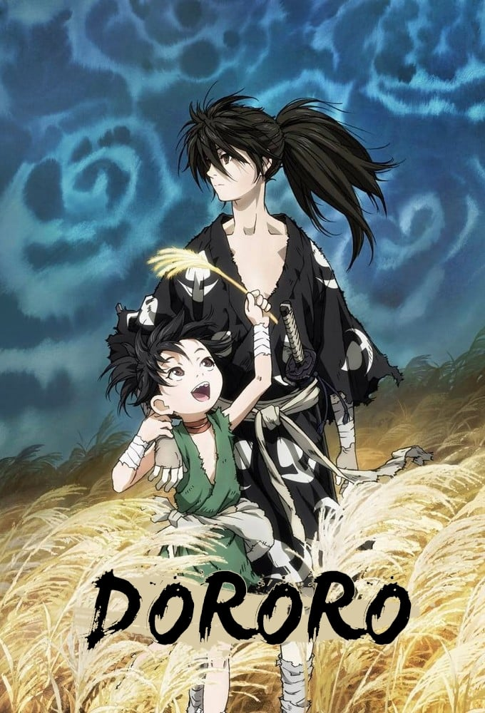
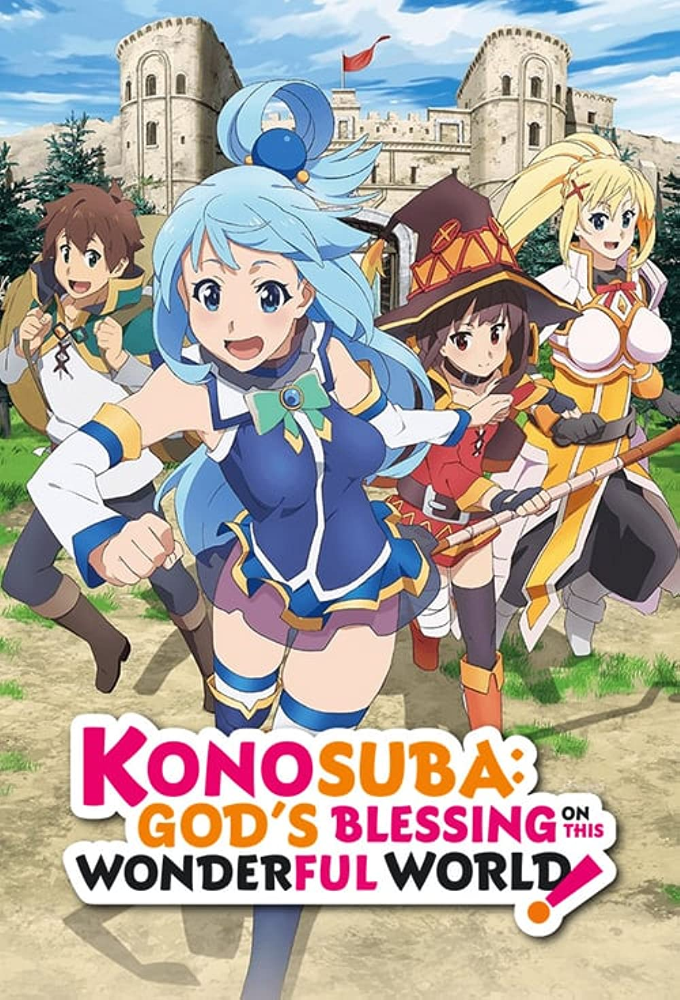

ACTION

Dororo
During the Sengoku period, a feudal lord has his newborn son's organs and limbs sacrificed to the twelve demons gods in exchange of prosperity for his people. The baby is abandoned but found by the doctor Jukai who specializes in giving people prosthetic limbs. Jukai adopts the baby and gives him limbs. When the child grows up, he is attacked by demons and develops the ability of seeing their silhouette to fight back. After defeating his first enemy, the now teenager regains his ability of feeling pain. Jukai names the teenager Hyakkimaru and sends him off on journey to regain his body. Along the way, Hyakkimaru meets a child named Dororo who decides to follow him, teaching him how to live and fight demons in exchange for food when visiting villages.
Vinland Saga
In 1013 AD, the young Thorfinn works for Askeladd in the hopes of challenging him to a duel and killing him in revenge for his father Thors' death, when they were attacked by him on a journey to England. Askeladd's company finds employment as mercenaries under King Sweyn in the Danish invasion of London by the British and Thorkell the Tall, Thorfinn's uncle who served with Thors in the Jomsvikings. When Thorkell takes Sweyn's son Prince Canute captive, Askeladd's company capture the prince with the intent of selling him to either side for a profit. Askeladd changes his plan to act on his personal agenda as a descendant of Artorius, to secure his mother's homeland of Wales from being invaded. Askeladd is ultimately forced to sacrifice himself by killing Sweyn during an audience when the king announces his plan to invade Wales, feigning madness as Canute kills him, so the Prince could take over Dane-occupied England without question. Thorfinn tries to assassinate King Canute, leaving him with a scar, and is subsequently sentenced to a life of enslavement by a sympathetic King Canute.
ROMCOM
Kaguya-sama: Love Is War
At the renowned Shuchiin Academy, Miyuki Shirogane and Kaguya Shinomiya are the student body's top representatives. Ranked the top student in the nation and respected by peers and mentors alike, Miyuki serves as the student council president. Alongside him, the vice president Kaguya—eldest daughter of the wealthy Shinomiya family—excels in every field imaginable. They are the envy of the entire student body, regarded as the perfect couple. However, despite both having already developed feelings for the other, neither are willing to admit them. The first to confess loses, will be looked down upon, and will be considered the lesser. With their honor and pride at stake, Miyuki and Kaguya are both equally determined to be the one to emerge victorious on the battlefield of love!
Nisekoi: False Love
Raku Ichijou, a first-year student at Bonyari High School, is the sole heir to an intimidating yakuza family. Ten years ago, Raku made a promise to his childhood friend. Now, all he has to go on is a pendant with a lock, which can only be unlocked with the key which the girl took with her when they parted. Now, years later, Raku has grown into a typical teenager, and all he wants is to remain as uninvolved in his yakuza background as possible while spending his school days alongside his middle school crush Kosaki Onodera. However, when the American Bee Hive Gang invades his family's turf, Raku's idyllic romantic dreams are sent for a toss as he is dragged into a frustrating conflict: Raku is to pretend that he is in a romantic relationship with Chitoge Kirisaki, the beautiful daughter of the Bee Hive's chief, so as to reduce the friction between the two groups. Unfortunately, reality could not be farther from this whopping lie—Raku and Chitoge fall in hate at first sight, as the girl is convinced he is a pathetic pushover, and in Raku's eyes, Chitoge is about as attractive as a savage gorilla.
ISEKAI


KonoSuba: God's Blessing on This Wonderful World!
After dying a laughable and pathetic death on his way back from buying a game, high school student and recluse Kazuma Satou finds himself sitting before a beautiful but obnoxious goddess named Aqua. She provides the NEET with two options: continue on to heaven or reincarnate in every gamer's dream—a real fantasy world! Choosing to start a new life, Kazuma is quickly tasked with defeating a Demon King who is terrorizing villages. But before he goes, he can choose one item of any kind to aid him in his quest, and the future hero selects Aqua. But Kazuma has made a grave mistake—Aqua is completely useless! Unfortunately, their troubles don't end here; it turns out that living in such a world is far different from how it plays out in a game. Instead of going on a thrilling adventure, the duo must first work to pay for their living expenses. Indeed, their misfortunes have only just begun!
That Time I Got Reincarnated as a Slime
Thirty-seven-year-old Satoru Mikami is a typical corporate worker, who is perfectly content with his monotonous lifestyle in Tokyo, other than failing to nail down a girlfriend even once throughout his life. In the midst of a casual encounter with his colleague, he falls victim to a random assailant on the streets and is stabbed. However, while succumbing to his injuries, a peculiar voice echoes in his mind, and recites a bunch of commands which the dying man cannot make sense of. When Satoru regains consciousness, he discovers that he has reincarnated as a goop of slime in an unfamiliar realm. In doing so, he acquires newfound skills—notably, the power to devour anything and mimic its appearance and abilities. He then stumbles upon the sealed Catastrophe-level monster "Storm Dragon" Veldora who had been sealed away for the past 300 years for devastating a town to ashes. Sympathetic to his predicament, Satoru befriends him, promising to assist in destroying the seal. In return, Veldora bestows upon him the name Rimuru Tempest to grant him divine protection. Now, liberated from the mundanities of his past life, Rimuru embarks on a fresh journey with a distinct goal in mind. As he grows accustomed to his new physique, his gooey antics ripple throughout the world, gradually altering his fate.
HIGHLY RECOMMENDED/ MUST WATCH
Yosuga no Sora
Due to a sudden accident, twins Haruka and Sora Kasugano have lost both of their parents. Starting their lives anew, they return to their childhood home—living once again in the rural, quaint town like they did four years ago. However, revisiting such a nostalgic place also means recalling all the memories the two of them made together, be it those that gave them blissful joy or those that made them suffer painful sorrow. Meeting both old acquaintances and new companions alike, the story of Haruka and Sora only gets more convoluted as their lives are slowly influenced by different acts of love, friendship, envy—and perhaps even lust.
Kiss x Sis
When Keita Suminoe's father remarried, not only did he gain a new mother, but elder twin sisters as well. Distinct yet similar, the homely and mature Ako is a former student council president, while the athletic and aloof Riko is the previous disciplinary president. The three of them have been together since kindergarten, resulting in a deep bond between the siblings. However, over time, their relationship developed into something more romantic—and erotic . Now in his last year of middle school, Keita has already received a sports recommendation, but it's from a different high school than his two sisters. Disappointed, both sisters try to change his mind, and he agrees, giving in to their desperate pleas. Unaware of the consequences, he now has to attempt to study for his high school exams while warding off the advances of his lust-driven sisters. With their parent's blessings, Ako and Riko strive to be Keita's future wife, leaving him to try his best to keep the relationship between them strictly platonic. However, with two beautiful girls vying for his attention, will Keita be able to withstand the endless temptations?